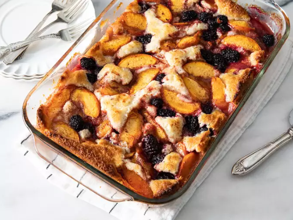

Peach and Blackberry Cobbler

Perfect sweet dish for everyday!
Ingriedents
- 4 cups peeled and sliced fresh peaches
- 1 cup fresh blackberries
- ¼ cup white sugar
- 1 teaspoon ground cinnamon
- 1 tablespoon lemon juice
- ½ cup butter, melted
- 1 ¼ cups all-purpose flour
- 1 cup white sugar
- 2 teaspoons baking powder
- ½ teaspoon salt
- 1 cup milk
Steps
- Preheat the oven to 350 degrees F (175 degrees C).
- Score the fish. If the fish counter did not already do this for you, use a knife to cut
slits about an inch
apart across the top of the fish. They do not need to be super-deep — just enough to cut through the skin.
- Mix peaches, blackberries, 1/4 cup sugar, cinnamon, and lemon juice in a bowl.
- Pour butter into a 9x13-inch glass baking dish and evenly coat the bottom and sides. Whisk
flour, 1 cup sugar, baking powder, and salt in a bowl; mix in milk, stirring just to moisten dry
ingredients. Pour batter into prepared baking dish and distribute fruit mixture evenly over the batter.
- Bake in the preheated oven until cobbler is golden brown, about 45 minutes
Then that’s it! Your fresh sweet meal is officially ready to go